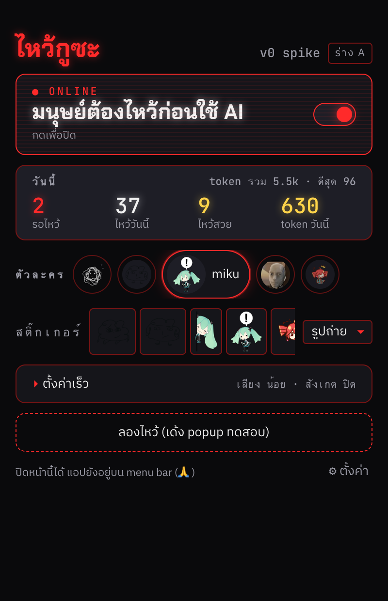
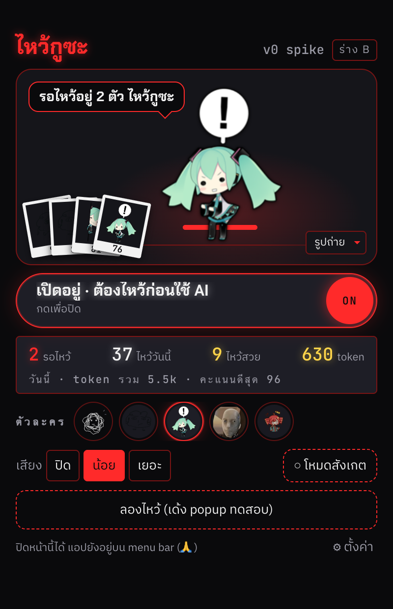
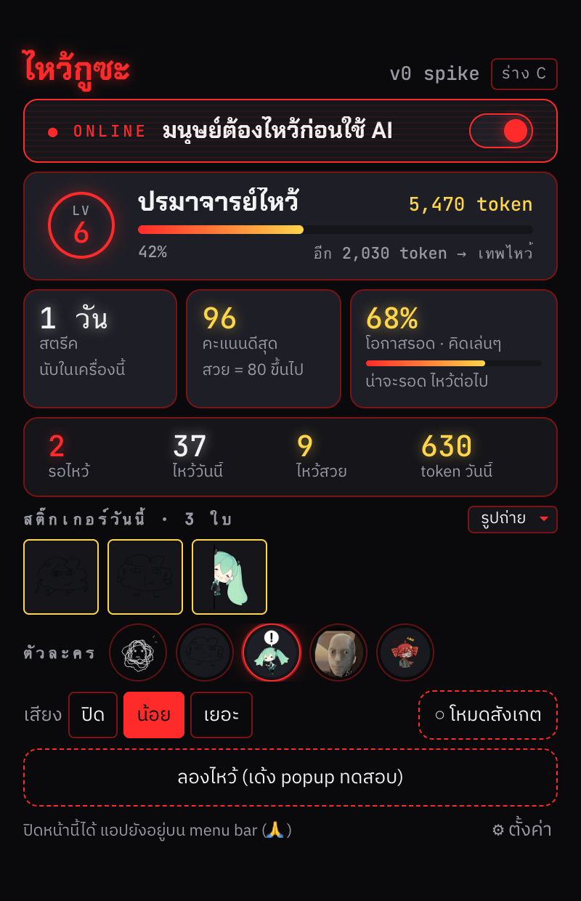
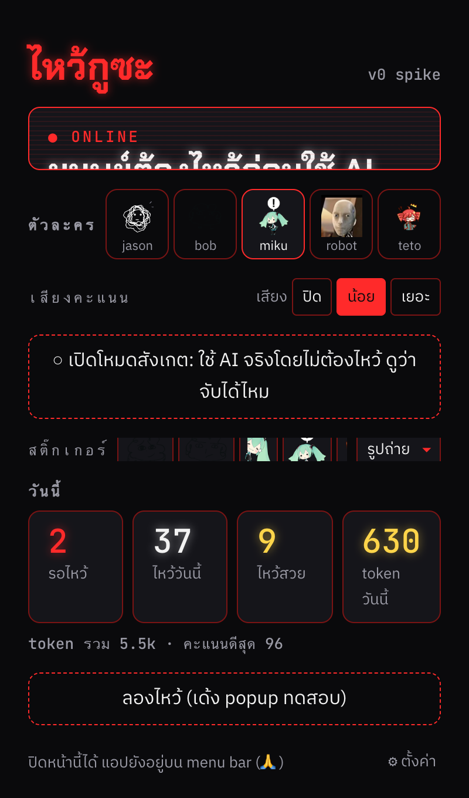

ไหว้กูซะ · HOME VARIANTS
หน้าหลัก 3 ร่าง ให้เลือก 1
ทั้งสามร่างกว้าง 400 สูงไม่เกิน 620 ไม่ scroll ใช้สี/ฟอนต์จาก tokens.ts เท่านั้น ภาพถ่ายจาก app/renderer/scripts/shoot-home-variants.mjs ด้วย daemon ปลอมในเบราว์เซอร์ (ตัวเลขสถิติเป็นตัวอย่าง รูปน้องเป็นของจริงจาก ~/.waikusa/avatars ส่วนสติ๊กเกอร์ใช้รูป mood ของน้องแทนไปก่อน) ถ่ายด้วย reduced-motion เพื่อให้เห็นครบ ของจริงมี CRT/scanline ตามเดิม
ภาพนิ่ง









เปิดดูของจริง
ร่างเลือกตอนรันด้วย ?variant=a|b|c ค่าจะถูกจำไว้ใน localStorage (wai-home-variant) ของ origin นั้น ดังนั้นถ้าเปิดลิงก์ด้วยพอร์ตเดียวกับที่แอป Electron โหลด (ปกติ 5173) หน้าหลักในแอปจะเปลี่ยนตามตอนเปิดครั้งถัดไป ในร่างมีชิป ร่าง A มุมขวาบน กดแล้ววน A → B → C → ร่างเดิม หรือเปิด ?variant=default เพื่อล้าง
- กับ daemon จริง (เห็นน้องกับสติ๊กเกอร์ของจริง):
cd app/renderer && npx vite --port 5191แล้วใส่http://localhost:5191ด้านล่าง (ตอนถ่ายภาพชุดนี้ server นี้เปิดทิ้งไว้ให้แล้ว) - mock (ไม่ต้องมี daemon):
npm run dev:mock -- --port 5191· mock จะขึ้น onboarding ก่อน กด "ต่อไป" 3 ครั้งแล้ว "เริ่มใช้งาน"